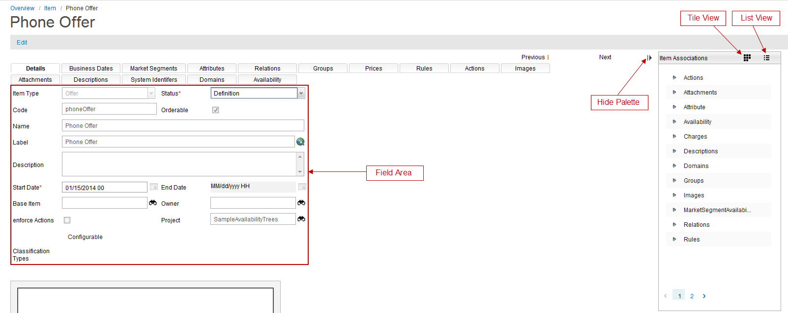
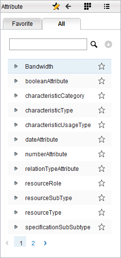

Item Palette
The Catalog application provides a functionality to add associations to an item through palette. Instead of opening a particular catalog object page (for example, attributes), searching, selecting and associating it to another object, you can drag and drop item associations from one project to another.
Drag and Drop the objects with Palette
The following are the steps to drag and drop item associations from the palette:
- From the Overview page, click Commercial Modeling > Items in the Quick start section.
- The Item page appears; click the New button and create a new Item.
- The Items Associations pallet appears on the right-side of the page. You can change the pallet view from List mode to Tile mode.
The top level of the palette UI displays the following items associations:
- Actions
- Attachments
- Attribute
- Availability
- Charges
- Descriptions
- Domains
- Groups
- Images
- Market Segments
- Relations
- Rules
- System Identifiers

- Double-click one item association for example, Attribute. The second level of the palette UI appears. The following table describes the icons and the tabs of the palette UI:
| Icon/Tabs |
Description |
| Search Icon ( ) |
Click this icon to search the objects of the selected item association. |
| Advanced Search Icon () |
Click this icon to get the advanced search options. |
| Favorite Icon () |
This icon allows you to add and remove the objects as favorite, from the list view and tile view, based on toggle technique. You can click the Favorite tab to view these objects. This icon uses toggle technique to add or remove the objects from favorites.
Follow the steps described in this document to search item association objects. The following section describes how to add and remove the objects from the favorite list:
List view:
- Click the grey star icon next to the object (for example, Bandwidth). The colour of the icon changes which indicates the object has been added to the favorite list.
- To remove the object from the favorite list, click the yellow star icon next to the object.
Tile view:
- Click the Favorite Icon.
- Double-click the objects in the tile view; the colour of the star icon changes.
- Click the Favorite icon again to save the changes.
- To remove the object from the favorite list, first click the Favorite icon and then double-click objects you want to remove from the list.
Note: You can confirm your change by clicking the Favorite tab and then checking the objects in the list. |
| Return Icon () |
Click this icon to return to the first level of the palette UI. |
| Favorites Tab |
Click this tab to view the favorite objects of the selected item association type. |
| All Tab |
Click this tab to view all objects of the selected item association type. |
- Click the All tab and then click the Search icon.
- A list of attribute type (available in the Catalog application) objects is displayed.

- Click on the Details tab of the item and then select one object from the list (for example, Bandwidth).
- Drag and drop the object in the main field area of the details tab. A blue line indicates the area where you can drop the selected object.
- The item attribute page appears; change the information according to your preferences, and then click the Save button.
- A confirmation message appears that the attribute version has been saved successfully, and it appears in the list of attribute versions.
|